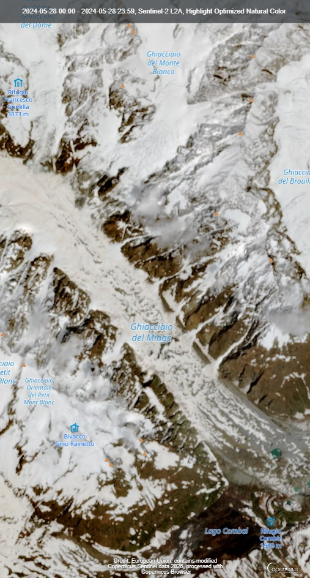
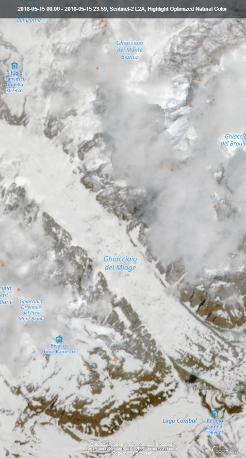

I ghiacciai alpini stanno scomparendo sotto i nostri occhi. Ma come possiamo misurarlo con certezza, senza andare fisicamente in montagna ogni anno?
La risposta viene dallo spazio: i satelliti ESA Copernicus fotografano ogni angolo della Terra ogni 5 giorni, gratis, per chiunque.
Perché questo progetto
I ghiacciai non scompaiono dall'oggi al domani. Lo fanno lentamente, anno dopo anno, in modo quasi invisibile a occhio nudo. Eppure i dati sono chiari: le Alpi hanno perso oltre il 40% della loro superficie glaciale dal 1900, e il ritmo sta accelerando.
La risposta è sì — grazie al programma ESA Copernicus, l'Unione Europea mette a disposizione di chiunque immagini satellitari ad alta risoluzione di tutta la Terra. Questo progetto usa quei dati per analizzare il ritiro del Ghiacciaio del Miage (Valle d'Aosta), uno dei più grandi ghiacciai italiani.
I ghiacciai sono riserves naturali d'acqua dolce: in estate si sciolgono lentamente e alimentano fiumi e laghi. Quando scompaiono, intere regioni rischiano siccità estiva, crisi idriche e cambiamenti irreversibili agli ecosistemi montani.
Come ho fatto
Per misurare il ritiro del ghiacciaio ho usato un approccio scientifico reale: analisi multitemporale di immagini satellitari. Ho confrontato fotografie dal satellite dello stesso luogo in anni diversi per vedere cosa è cambiato.
È il programma spaziale europeo per il monitoraggio ambientale della Terra. I satelliti Sentinel-2 fotografano ogni punto del pianeta ogni 5 giorni, con una risoluzione di 10 metri per pixel. Tutti i dati sono gratuiti e scaricabili da chiunque su browser.dataspace.copernicus.eu.
Le immagini reali
Queste sono le immagini vere scaricate dal satellite Sentinel-2. Trascina la barra centrale per osservare la riduzione della copertura nevosa.

Maggio 2024
Maggio 2018I dati quantitativi
Riflessione finale
L'analisi dimostra l'efficacia del telerilevamento spaziale come strumento democratico. Garantire la tutela dei ghiacciai rientra negli obiettivi dell'Agenda 2030 (Obiettivo 13 e Obiettivo 6).